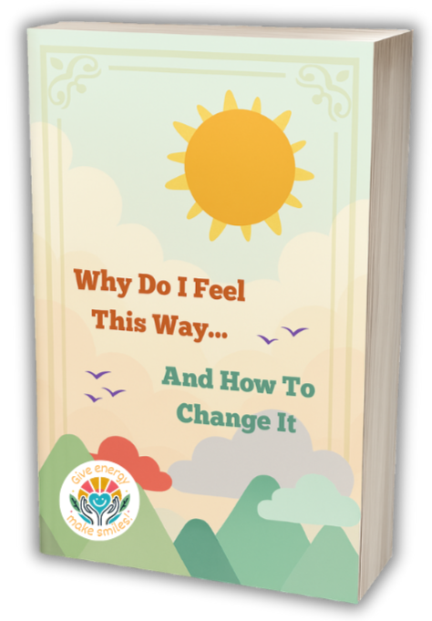
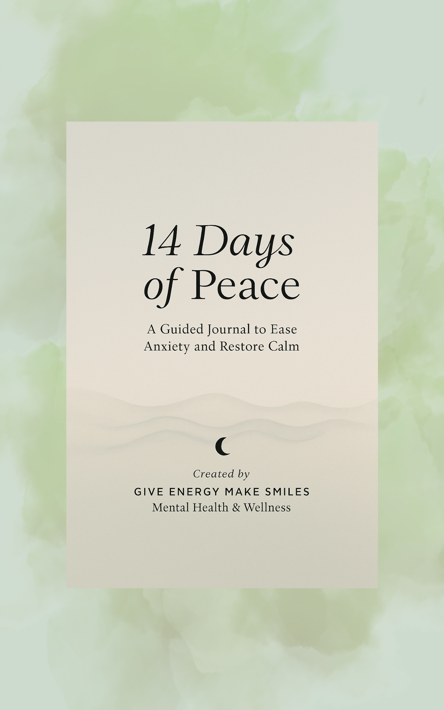
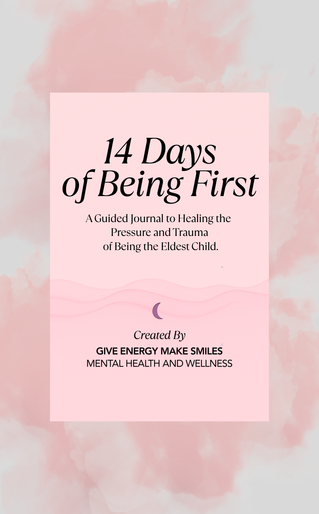
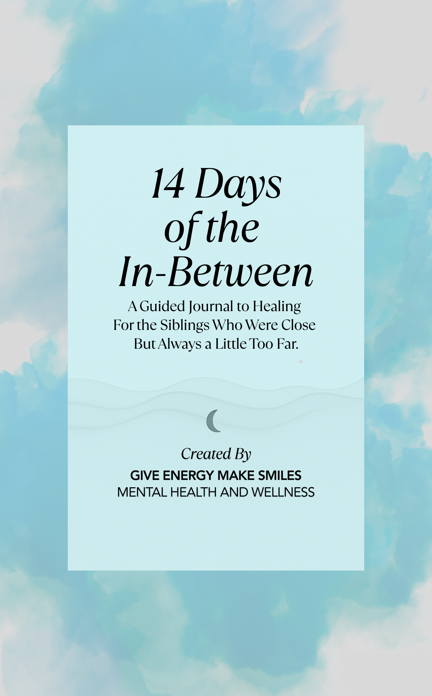
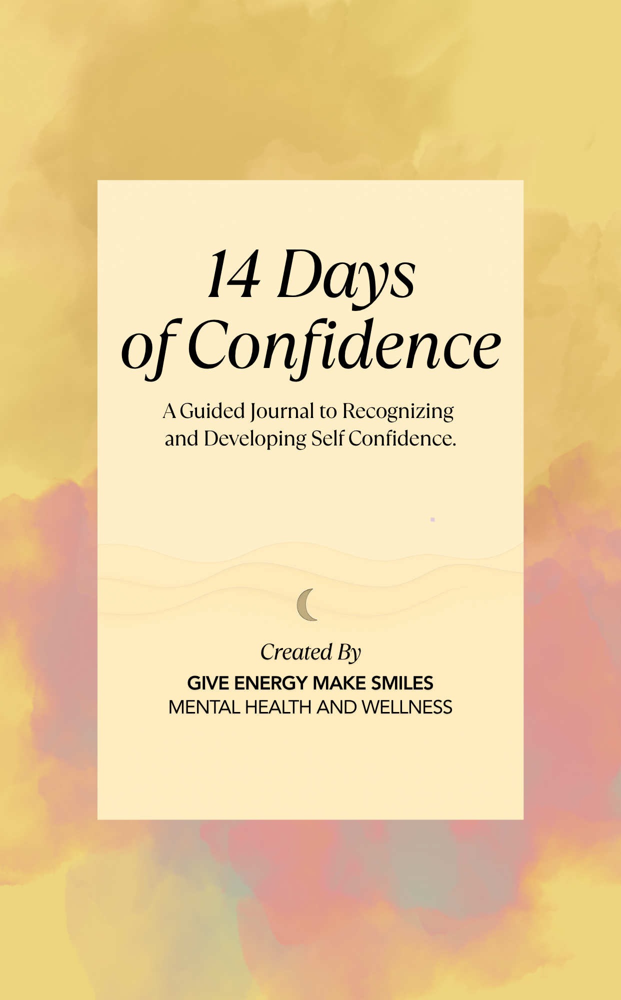

Ready to grow with intention?
Learn how your emotions can become your greatest guide.
Give Energy Make Smiles is a mental health practice led by Kayla Luu, Licensed Clinical Social Worker, specializing in online therapy, guided journals and gamified self improvement tools.

Tools for your growth journey
Guided journals, books and the Voyager card system, created to support the work we do together.


Specializing in Individual Therapy Online
Telehealth Counseling are provided only in the State of Florida & Arizona
Meet Kayla Luu, Your Therapist

Hi, I'm Kayla. I'm a Licensed Clinical Social Worker (LCSW) in Florida and Arizona. I know how overwhelming life can feel at times. You may be carrying stress, struggling to find balance, or supporting loved ones while trying not to lose yourself in the process. My goal is to create a space where you feel heard, understood, supported and encouraged as you move through life's challenges.
For over 10 years, I've worked with individual adults navigating stress, anxiety, depression and major life transitions. I've also supported parents who want guidance in connecting with their children, whether that's building better communication, setting healthy boundaries or managing the unique pressures of parenting.
Find the Right Therapy Modality
I approach counseling with an open heart and mind, and hope to create a warm and welcoming environment for you. I want to enable you to determine the areas you wish to address, and I will tailor the therapeutic approach on your needs and area of focus. I draw on several treatment modalities to allow you to further develop your strengths and to help you meet all of your treatment plan goals at a speed that works best for you. My goals as a therapist are to make you feel safe, validated, and empowered.
Cognitive Behavioral Therapy (CBT)
CBT helps you identify unhelpful thought patterns and replace them with healthier, more balanced ways of thinking and behaving. It's practical and goa...
Eye Movement Desensitization Reprocessing (EMDR)
EMDR is highly effective for processing traumatic memories. Through guided eye movements or other bilateral stimulation, it helps your brain reprocess...
Clinical Hypnosis (Level 1)
Clinical Hypnosis Level 1 introduces gentle, guided relaxation and focused imagery to help you tap into your subconscious mind and encourage positive ...
Solution Focus Therapy (SFT)
Solution-focused therapy emphasizes your strengths and future goals rather than revisiting the past. It's a brief, empowering approach designed to hel...
Trauma Informed Care (TIC)
Trauma informed therapy places safety, trust, and empowerment at the center of your healing. Recognizing the widespread impact of trauma, this approac...
Person Centered Therapy (PCT)
Person centered therapy, provides a non-directive, empathetic environment where you are fully accepted. This method allows you to explore feelings, in...
Conditions I Can Help With
Anxiety Disorders
Anxiety can be an all-consuming feeling of apprehension, nervousness, and worry that can arise in response to a particular situation or be present con...
Depression & Low Mood
Depression is a pervasive feeling of sadness, hopelessness, and emptiness that can make it difficult to find joy in everyday life. It can drain our en...
Relationship Challenges
Relationship conflict can arise when two or more people have differing opinions, expectations, or needs that are not being met. Relationship conflict ...
Life Transitions
Going through a life transition can be an overwhelming experience, and it's common to struggle with the changes and uncertainties that come with it. W...
Trauma & PTSD Recovery
Experiencing trauma can be an incredibly difficult and painful experience that can have long-lasting effects on our mental health and well-being. Trau...
Self Esteem & Confidence
Low self-esteem can be challenging, affecting all areas of life, and making us feel inadequate and unworthy, leading to doubts about our abilities and...
Care that fits your life
Accessible & Flexible Scheduling
Life is busy and therapy should fit into your schedule, not the other way around. We offer convenient online sessions with flexible appointment times, making it easier for you to get the support you need without extra stress.
Safe & Confidential Sessions
Your privacy matters. All sessions are conducted through secure, HIPAA compliant platforms so you can feel safe sharing openly, knowing that your information is fully protected.
Evidence Based Care from a Licensed LCSW
Therapy works best when it's grounded in proven methods. Kayla Luu, a Licensed Clinical Social Worker (LCSW), uses evidence based approaches like CBT, EMDR and mindfulness to help you overcome challenges and build lasting resilience.
HSA & FSA Approved
Therapy should be accessible. That's why we accept Health Savings Accounts (HSA) and Flexible Spending Accounts (FSA) for all online therapy sessions. Using your pre-tax dollars makes it easier and more affordable to invest in your mental health.
Just use your HSA or FSA card at checkout, or request an itemized receipt to submit for reimbursement. We'll help guide you through the process so payment is stress-free.
Tools for Beyond the Session
Take therapy beyond the session. Explore our collection of self help books designed to help you practice coping strategies, improve emotional awareness and stay on track between appointments.
Self Help Books
Take therapy beyond the session. Explore our collection of self help books designed to help you practice coping strategies, improve emotional awareness and stay on track between appointments.
Guided Journals for Anxiety & Growth
Our guided journals provide daily prompts, affirmations and mindfulness exercises that support healing, reduce anxiety and encourage personal growth in a structured, supportive way.



